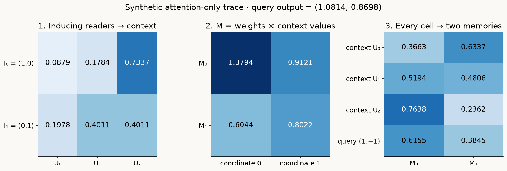
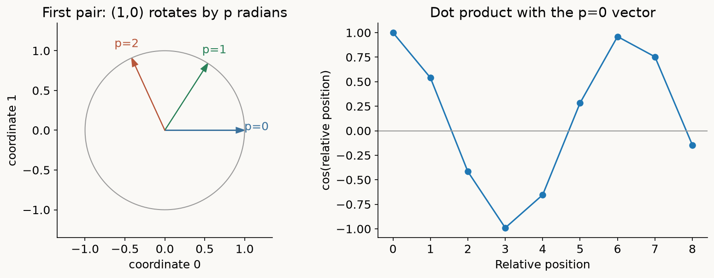
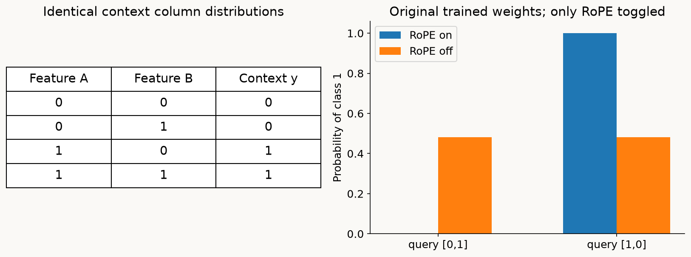
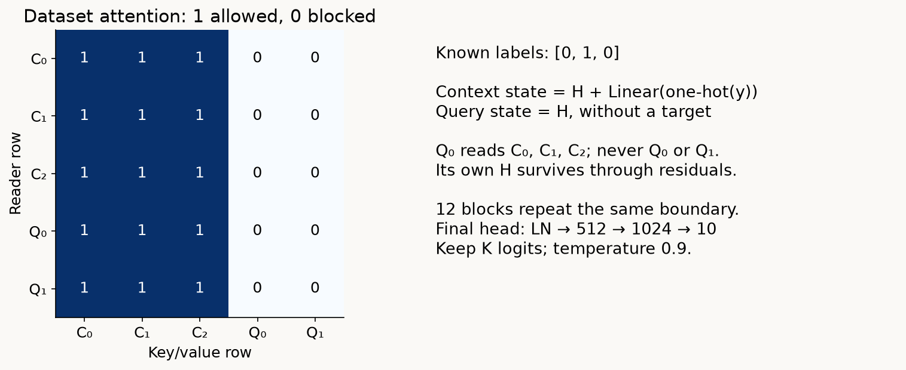
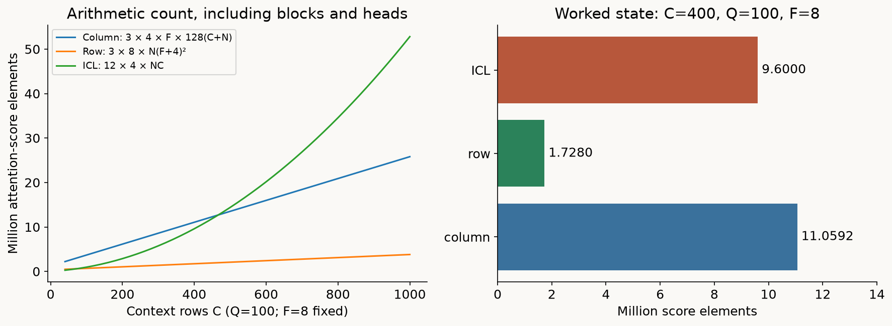
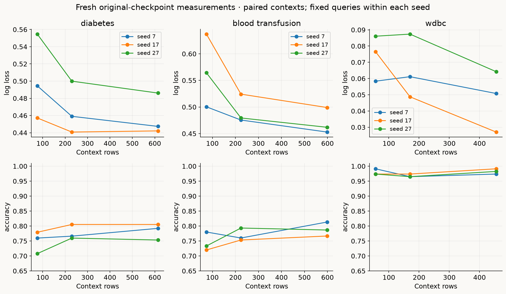
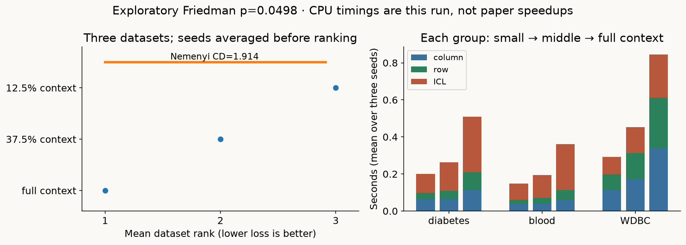

Year 2 · Quarter 3 · Lesson 066
Build TabICL: column memory, row identity and context prediction
Retrieve before reading
Why collapse the feature axis before in-context learning?¶
Suppose you must predict outcomes for a new table whose columns did not exist during pretraining. A feature-specific tokenizer with a learned parameter for “age” cannot simply look up the meaning of an unnamed new column. A shared scalar tokenizer transfers across schemas, but the number 100 could be an ordinary income measurement, an extreme count, or a category code. The distribution of the other values supplies clues. TabICL first uses those clues to construct cell embeddings, combines each row's cells into one vector, and only then relates rows to their labels.
Your outcome: trace and implement a complete pretrained TabICL forward pass, verify its information boundaries against the released code, and measure how nested labeled contexts change prediction on the same query rows. This supports our relational mission by making the single-table baseline explainable. An efficient flat-table foundation model is a stronger baseline to beat; its columns and rows still contain no entity graph, foreign-key relation, or event-time availability rule.
Recall three prerequisites before continuing. Attention forms a weighted combination of value vectors, with weights obtained by normalizing query–key similarities. In-context learning (ICL) conditions fixed network weights on supplied examples; it does not update those weights for the new task. A query row is an example whose features are known and target is withheld. Training/context rows supply known targets. The word “training” can therefore name either expensive synthetic pretraining or the labeled context of a new task; distinguish them throughout this lesson.
The primary source is Qu et al., original February 2025 paper, §§3–5 and Appendices B–E. The active lab implements every pretrained layer of the original tabicl-classifier-v1-0208.ckpt, validated against release tabicl==0.1.4. The earlier lesson measured the later v1.1-0506 checkpoint while showing only an untrained column skeleton. Those results remain historical. The revised experiment uses the original checkpoint and visible model throughout. Matching a checkpoint's computation is a narrower achievement than reproducing its pretraining or published benchmark.
Model architecture: two phases, three transformers¶
Let C be the number of context rows, Q the number of query rows, N=C+Q, F the retained feature count, and K the observed class count. The paper uses different letters; these definitions stay fixed here. We omit a leading dataset batch dimension B in most diagrams. Context and query features are concatenated in that order; only the C context labels enter the model.
The numeric wrapper first removes columns that are constant in the context, then fits its scaling and outlier rules on that context. The column stage turns N×F scalars into N×F×128 cell embeddings. The row stage prepends four learned 128-dimensional CLS summary tokens to each row, processes F+4 tokens, and concatenates the four outputs into N×512 row representations. Finally, the ICL stage adds a learned label embedding to context rows, applies twelve attention blocks across rows, and decodes Q×K logits. A logit is an unnormalized class score; softmax turns these scores into probabilities summing to one.

The full architecture is specific: three induced column blocks, four attention heads and 128 inducing vectors per block; three row blocks with eight heads and four CLS tokens; twelve ICL blocks with four heads. Column and row widths are 128; ICL width is 512. Every feed-forward hidden layer doubles its stage's width and uses GELU, a smooth activation. The checked checkpoint uses normalization before attention and feed-forward sublayers, with zero dropout at inference. It contains 27,051,658 trainable parameter entries plus eight fixed RoPE frequencies. These counts come from the loaded state, not a rounded marketing size.
There are two conceptual phases because column embedding and row interaction jointly construct the label-independent representation. There are three transformers because those two operations and ICL each have their own blocks. Label-independent does not mean context-independent: changing context feature values can change the row representations. Changing only context labels leaves the column and row stages fixed and changes the ICL stage. This separation is what later makes reuse across class-hierarchy subproblems possible. Paper Figure 1, §§3.1–3.4.
The lab supports finite numeric arrays, one preprocessing/feature/class view, and two to ten classes. The full learned model is present; the source library is used only for validation. Categorical conversion, power-transform ensembles, hierarchical class extension, variable-width padded pretraining batches, and automatic CPU/disk offload are outside the measured wrapper. These omissions change the supported inference procedure, not the number of pretrained layers copied into the model.
Before entering the blocks, compare the previous architectures. Historical TabPFN v1 (Lesson 062) directly projects a whole row into a fixed-width token, then performs row ICL. TabPFN v2 (Lesson 064) retains grouped feature tokens plus a target token and repeatedly alternates within-row and across-row attention; labels enter the target-token stream before those repeated blocks. TabICL instead uses a context-aware, label-free column/row network to construct a single 512-coordinate row representation before its twelve ICL blocks. This removes the feature axis from the expensive later row attention, while making the quality of that earlier compression critical.
The distinction also sharpens Lesson 065's representation lesson. A TabICL pre-ICL row vector cannot contain its own supplied label, because no labels have entered yet. A final ICL context state can contain that label. Calling both “row embeddings” would conceal the information difference. These are architectural tradeoffs, not a proof that one family always wins.
First make the attention block concrete¶
For one head, put the query vectors in A, keys in B, and values in V. A query has dₕ coordinates. Form the score matrix S=A Bᵀ/√dₕ, apply softmax separately across each row of S, and multiply the resulting weights by V. Each output is a mixture of eligible value vectors. Dividing by √dₕ controls how the typical dot-product scale changes with width; it is not division by the number of rows.
Multihead attention projects the input into several query/key/value coordinate systems and performs that calculation independently in each head. It concatenates head outputs and applies a learned output projection. In the column stage, four heads divide width 128 into 32 coordinates per head. Row attention has eight heads of 16 coordinates. Dataset attention has four heads of 128 coordinates. The notebook exposes the packed projection weights, the reshaping, the softmax and the output projection rather than calling the original attention package.
A multihead attention block, abbreviated MAB, also contains residual additions, normalization and a feed-forward network. In the checked pre-normalized release path, for query input q and memory input k:
a = q + MHA(LN₁(q), LN₁(k), LN₁(k))
MAB(q,k) = a + Linear₂(GELU(Linear₁(LN₂(a)))).
Layer normalization, LN, centers and rescales each token across its coordinates and then applies learned coordinate-wise scale and offset. It never computes a statistic across query rows. The residual connection preserves q as an explicit additive route. Consequently, a full MAB output is not constrained to lie in the convex hull of the memory vectors, even though an individual attention mixture is. The FFN acts on each token separately; row mixing occurs in attention. See MultiheadAttentionBlock.forward in the pinned source.
Column stage: learned readers build a task-specific memory¶
Consider a single feature column. A shared linear layer first projects each scalar to a 128-dimensional token U. Sharing means that the same weights process all columns and future schemas; it does not force different columns to have the same output. Context values, and therefore the attention memory, differ across columns.
An inducing vector is a learned parameter that acts as a reader. It is neither a selected row ID nor a k-means centroid. In each column block, 128 inducing readers I first attend to only the C context tokens:
M = MAB₁(I, U_context) with shape 128×128.
All N cell tokens then read that memory:
V = MAB₂(U, M) with shapeN×128.
Three such blocks are applied in succession; each has its own inducing parameters and two complete MABs. The inducing parameters are fixed during inference, but the resulting memory M changes with the context. During pretraining, the final query prediction loss can backpropagate through both reads and update those parameters. At inference, the changing memory is conditioning, not an optimizer step. Paper Eqs.3–6 and Figure 2.

The figure deliberately isolates the attention arithmetic: one head, identity projections, no residual or feed-forward transformations. Three context tokens are (-1,0), (0,1) and (2,1), and two inducing readers are (1,0) and (0,1). The first reader's scores are [-0.7071,0,1.4142]; softmax gives weights [0.0879,0.1784,0.7337]. Its weighted memory is (1.3794,0.9121). The second reader yields (0.6044,0.8022). These vectors do not equal any supplied row.
A query token (1,-1) reads the two memories with weights approximately [0.6155,0.3845] and receives (1.0814,0.8698). The three context readers produce different mixtures too. This shows why the output is not a single column mean broadcast everywhere. With exactly one inducing memory, every attention reader would receive that memory before the residual path; that special case cannot explain the richer 128-reader checkpoint.
Predict before moving the control: if an additional query becomes enormous, should M change? It cannot: query tokens never supply first-stage keys or values. The query can change its own second-stage mixture while existing rows remain fixed. By induction, that property survives all three column blocks. Each block's context outputs depend on earlier context outputs only. The paper's phrase that ISAB outputs “depend solely on training data” needs this precise reading: a particular query output also depends on that query's own features; it excludes other query rows. Allowing queries to write the memory would be a different, transductive procedure.
After the last column block, two distinct learned projections generate W and B. The release normalizes these generated vectors separately, then computes E=x·W+B coordinate by coordinate. Here x is the wrapper-transformed scalar, not an unscaled number such as raw income. The multiplication broadcasts that scalar across 128 coordinates. The function conditional_affine is live in every measured cell embedding; omitting the W/B normalizations can preserve all shapes while changing the checkpoint's behavior.
For a two-coordinate arithmetic fixture, x=2, W=(0.5,−1) and B=(0.1,0.3) produce E=(1.1,−1.7). This is a demonstration of the final affine step, not a learned model trace. The paper's Figure 3 projects summaries of 40,000 synthetic columns and finds structure associated with skewness and kurtosis. That is evidence of distribution-related information, not proof that each learned coordinate exactly computes a named statistic or causally identifies feature meaning.
Row stage: retain feature identity while aggregating¶
The row transformer receives one row's F cell embeddings and four shared, learned CLS tokens. A CLS token is a trainable summary query with its own coordinates, not a class label. All F+4 tokens interact through each of the three row blocks. The four final CLS states are normalized individually and concatenated in their original order: four 128-wide vectors produce 512 coordinates. Averaging them would destroy the independent coordinate slots expected by the pretrained ICL weights.
Why introduce position into a table with no natural column order? Imagine two columns with identical distributions and a tokenizer that only sees those distributions. Without a positional identifier, a row containing feature tokens {a,b} and a row containing {b,a} present the same set to the CLS readers. Set aggregation cannot distinguish them, even if their labels differ. The paper illustrates this issue using balance-scale features with the same discrete value distribution. This is a mechanism argument about the representation; the accompanying t-SNE image is a visualization, not a numeric proof of downstream accuracy.
Rotary positional embedding (RoPE) rotates adjacent pairs of query/key coordinates before attention. For a pair (u,v) at token position p, let θ=p·ω. Its new coordinates are (u cosθ−v sinθ, u sinθ+v cosθ). The rotation preserves the vector's length but can change its dot product with a vector at a different position. Because R(p)ᵀR(q)=R(q−p), the score carries relative-position information. Values are not rotated in this path. Paper §3.3 and Appendix C.

For the first frequency ω=1, take two unrotated query/key pairs both equal to (1,0). At the same position their dot product is 1; separated by one position it is cos(1)≈0.5403; separated by two it is cos(2)≈−0.4161. A single pair need not decay monotonically with distance; the example becomes periodic. Do not turn “position affects the score” into an unconditional theorem that faraway columns receive lower attention.
The released row head has 16 coordinates and therefore eight adjacent pairs. Its frequencies are ωᵢ=100000^(−2i/16) for i=0,…,7. Positions include the four prepended CLS tokens: the first feature is position 4, not 0. The 100,000 base matches the model-specific choice in §3.3; Appendix C writes a generic 10,000 illustration. Changing the base or rotating halves instead of adjacent pairs produces a different computation even though shapes still match.
RoPE breaks exact single-view column-permutation invariance. Permuting whole columns consistently across context and query is a serialization intervention; swapping values within only a query row changes the input itself. These are different experiments. The paper averages multiple column/class/preprocessor views to reduce sensitivity to a particular ordering. Averaging a finite set of permutations approximates symmetry; it does not certify invariance under every permutation. The lab uses one fixed view so the mechanism remains inspectable and the computation bounded.
A separate fixed-weight source fixture makes the collapse mechanism measurable. The four context rows (0,0),(0,1),(1,0),(1,1) give both features the same distribution, with labels [0,0,1,1]. Queries (0,1) and (1,0) have class-1 probabilities about 0.000029 and 0.999969 with the released RoPE. Disabling only RoPE makes their row representations nearly identical and gives about 0.480839 and 0.480837. Changing context labels leaves these pre-ICL representations exactly unchanged. This is a forward intervention in already trained weights, not a retrained ablation or reproduction of paper Figure 4. Executed source fixture.

Dataset stage: labels enter here, queries read only context¶
The 512-dimensional row representation H was computed without labels. For each context label y, the release creates a 10-way one-hot vector, applies a learned linear map to 512 coordinates, and adds that label embedding to H. Even a two-class dataset uses the learned 10-input label encoder. Query rows receive no label embedding. No placeholder query target is passed to this model.
Each of twelve ICL blocks allows every context row to attend to all C context rows, including itself. Every query may attend to those same C rows and to no query rows, including itself as a key. Its own representation still travels through the residual path and serves as its query vector. Thus “no query self-attention” does not mean “the prediction ignores the query features.”

The mask can be implemented more directly than constructing an N×N Boolean matrix: project Q for all N readers, but restrict K and V to the first C rows. The resulting score tensor is N×C per head. That restriction works for both context and query readers. It is not a language-model causal mask: context row 0 can read context rowC−1. It is also not enough to mask only the final block; allowing query information into earlier context states would open a path back to other queries.
After the final block, the source applies a 512-coordinate LayerNorm and the complete head Linear(512,1024) → GELU → Linear(1024,10). Keep the first K observed-class logits and apply softmax after division by temperature 0.9. If two logits are(0,0.9), their scaled difference is 1 and the second class probability is 0.7311. Temperature is a fixed release setting here; the test labels do not tune it. Better accuracy and better log loss can disagree because log loss depends on probability confidence as well as the largest-probability class.
This architecture gives a useful three-part isolation argument. Column memories use context feature rows only; row attention stays inside each row; ICL keys use context states only. Therefore changing or appending an unrelated query cannot change an existing query's mathematical result under this wrapper. Small floating-point differences can arise when shapes change numerical kernels, so the checker uses explicit tolerances. Separately, changing a context label should affect ICL predictions while preserving the first two stages. Both directions are necessary: isolation plus sensitivity demonstrates a functioning information boundary.
The wrapper is part of the prediction procedure¶
A correct attention mask cannot rescue preprocessing fitted on the full table. The supported release path receives a finite numeric array and uses the context to identify nonconstant features. Query variability cannot rescue a constant context column. It then computes a population standard deviation plus 10⁻⁶ for each retained feature, subtracts the context mean, scales, and clips to[−100,100]. The same parameters transform the query.
Next comes a less familiar two-pass outlier rule. Compute the sample mean and sample standard deviation of the scaled context; exclude values beyond four standard deviations only when recomputing those statistics; then form new lower and upper bounds. Transformation softens extreme values using logarithms. It does not delete the observations from the context. The code applies the lower operation first and computes the upper operation from its result, so reversing the two lines can change the answer. The worked CHECK includes an extreme context value and a constant column to detect this path. PreprocessingPipeline, OutlierRemover, CustomStandardScaler.
The name normalization_method='none' is potentially misleading: it skips the optional second normalization such as Yeo–Johnson power transformation. Initial standardization and outlier processing still run. In a one-estimator release wrapper, the default method order selects this none view and performs no feature or class shift. Our supported wrapper explicitly names those choices, compares transformed arrays with the source, and verifies final probabilities.
Missing values, categorical strings and all-constant contexts receive explicit rejection in this lab rather than an invented embedding policy. The official DataFrame conversion path has additional type-specific preprocessing; it is not certified by a finite-array check. More generally, the “full model” and “full wrapper” are different scope claims. Here all pretrained layers are implemented, while the wrapper intentionally supports the declared numeric single-view path.
The optional power view shows why this scope matters. In an executed original-source fixture, appending two extreme queries triggers a power-transform error and a fallback that clips the whole query batch to context extrema. An existing query's class-1 probability changes from 0.977911 to 0.999381, despite unchanged context and model weights. The none-view control keeps its encoded input identical, with only a 2.38×10⁻⁷ numerical probability difference. This exposes wrapper coupling, not a failure of the model's context-only attention boundary. The behavior was checked under the recorded scikit-learn 1.9.0 runtime; it is not an assertion about every library version. Counterexample and exact inputs.
Count the remaining cost before interpreting timing¶
For one table, let m=128 inducing vectors and L denote the number of blocks in the relevant stage. Count conceptual attention-score elements, including every head. Column attention uses 3·4·F·m·(C+N): each block forms m×C scores to write its memory and N×m scores to read it. Row attention uses 3·8·N·(F+4)². Dataset attention uses 12·4·N·C, or 12·4·(C²+QC). Projection and feed-forward work are additional.

With C=400, Q=100 and F=8, these counts are 11,059,200 for the column stage, 1,728,000 for the row stage, and 9,600,000 for dataset ICL. Holding Q and F fixed while doubling C makes the ICL term grow from 9.6million to 34.56million. The inducing column computation grows linearly in row count for fixed m; the complete system retains a context-quadratic ICL term. For small contexts, 128 inducing readers can even cost more score elements than direct context attention in that one column. The design targets a favorable regime, not an algebraic win at every C.
These are operation counts, not a peak-memory estimator. Our visible attention_mix materializes its score matrix. The paper's efficient implementation uses FlashAttention, stage-specific batching, and activation offload. FlashAttention can avoid storing a full quadratic score matrix while still performing quadratic attention work. Reducing memory complexity does not automatically reduce arithmetic complexity.
Appendix D.2 changes the batching unit by stage: columns for the column encoder, rows for row interaction, and tables for ICL. Its memory predictor is fitted on an A100 and guides those batch sizes. In the 500,000-row, 500-feature example, 80% of rows are context and 20% queries; the appendix reports less than 14 GB GPU memory but roughly 120 GB CPU memory before optional disk offload. That is a specific demonstrated system configuration, not a promise that our eager CPU implementation fits the same table or that a 14 GB GPU alone suffices. The 500K experiment remains NOT_RUN here.
What pretraining taught the fixed weights¶
The architecture explains information flow; its learned weights come from a separate synthetic-training procedure. The paper mixes 70% neural SCM tasks with 30% tree-based SCM tasks. An SCM is a directed acyclic dependency graph in which a child variable is a function of its parents plus noise. The tree construction fits XGBoost models to random Gaussian targets at graph layers, then uses their predictions as child values. It is not supervised training on real task labels and not simply attaching a tree to the final target. Appendix B also broadens nonlinearities, including random Fourier-feature activation functions whose coefficients define sampled functions. §4.1 and Appendix B.
The curriculum begins with 1024-row tasks for 100,000 optimizer steps, proceeds through 2000 steps with task sizes log-uniformly sampled between 1K and 40K, and ends with 50 steps on 40K–60K rows while freezing the embedding stages and training only ICL. Each optimizer step comprises 512 synthetic datasets; microbatches and gradient accumulation make that effective batch possible. Appendix D.1 specifies Adam, gradient-norm clipping at 1, and distinct learning-rate schedules by stage. Three 40 GB A100s ran for about two weeks. A forward-pass lab copies the outcome of that training; it does not regenerate it.
For more than ten classes, the paper constructs a classification hierarchy. A node predicts a class group; a descendant predicts a finer group or class. A class's probability multiplies its conditional probabilities along the route. For example, a parent probability 0.6 and within-group class probability 0.25 yield 0.15 for that class. Because the row embeddings were computed without labels, subproblems can reuse them while changing context label encodings in ICL. The lab rejects K>10; describing this strategy does not establish an executed hierarchy implementation.
Fresh experiment: additional context, fixed query rows¶
Commit a prediction first: should every increase in C improve both accuracy and log loss on every fixed query set? More labels may help, but new examples also change the learned conditioning problem, the column distribution summaries and wrapper statistics. Finite samples and a fixed synthetic prior offer no monotonicity theorem.
The author experiment uses all rows of three small numeric datasets: diabetes 768×8, blood transfusion 748×4, and WDBC 569×30. These are complete local datasets, not a five-hundred-row sample of a large benchmark. For split seeds 7,17 and 27, a stratified split reserves 20% as queries. A predeclared label-blind permutation of the remaining 80% defines nested context prefixes at 12.5%,37.5% and 100%. The three sizes are 76/230/614 for diabetes, 74/224/598 for blood transfusion, and 56/170/455 for WDBC. Query IDs stay fixed across context sizes within each split.
No model is fitted or selected using query labels. The network and temperature remain fixed; wrapper statistics refit on each legal context. This intervention therefore measures the complete supported system's response to additional context, including representation and preprocessing changes. It does not isolate label count while holding every representation fixed. Record preprocessing, column, row and ICL wall times separately, excluding checkpoint load and source verification. CPU threads are fixed to one. Small shared-workspace wall times are diagnostics of this run, not a benchmark speedup against another model.

The actual mean log losses (small → middle → full context) are 0.5021 → 0.4666 → 0.4585 for diabetes, 0.5672 → 0.4930 → 0.4713 for blood transfusion, and 0.0737 → 0.0657 → 0.0473 for WDBC. All three mean losses improve, but accuracy is not monotone: WDBC moves from 0.9795 to 0.9678 to 0.9825. On WDBC seed 27, middle-context loss also rises slightly above small-context loss. That one exception is enough to reject the prediction that every context increase must improve every metric.
| Dataset | Context rows | Log loss mean ± SD | Accuracy mean ± SD |
|---|---|---|---|
| diabetes | 76 | 0.5021 ± 0.0492 | 0.7489 ± 0.0369 |
| diabetes | 230 | 0.4666 ± 0.0303 | 0.7771 ± 0.0246 |
| diabetes | 614 | 0.4585 ± 0.0240 | 0.7835 ± 0.0270 |
| blood_transfusion | 74 | 0.5672 ± 0.0684 | 0.7444 ± 0.0315 |
| blood_transfusion | 224 | 0.4930 ± 0.0270 | 0.7689 ± 0.0214 |
| blood_transfusion | 598 | 0.4713 ± 0.0245 | 0.7889 ± 0.0234 |
| wdbc | 56 | 0.0737 ± 0.0141 | 0.9795 ± 0.0101 |
| wdbc | 170 | 0.0657 ± 0.0197 | 0.9678 ± 0.0051 |
| wdbc | 455 | 0.0473 ± 0.0188 | 0.9825 ± 0.0088 |
Author-reference results, three seeds per cell. SD is sample standard deviation, not a confidence interval.

The full-minus-small loss differences average −0.0436, −0.0960 and −0.0263. Their conditional t 95 intervals are [−0.1104, 0.0233], [−0.2092, 0.0173] and [−0.0793, 0.0266]; all include zero. Mean loss ranks are 3, 2 and 1 for small, middle and full context, with exploratory Friedman p=0.0498 and Nemenyi CD=1.914. Enumerating all 6³=216 within-dataset rank permutations gives exact p=6/216≈0.0278 under an exchangeable-method-ranks null. That null treats each dataset as independent and all context-size rank assignments as equally likely; it does not make these convenience datasets representative or these overlapping seed splits independent. The asymptotic Friedman test uses a chi-square approximation, which is especially fragile with only three datasets. Both tests address this small rank panel; the barely sub-0.05 p-value does not override the small evidence base or create a universal law. The complete measured stages took 9.81 seconds in this CPU run, excluding load/checks. Larger WDBC feature count makes its column/row costs visibly important. Prediction reconstruction and statistics.
Read connected points as paired context-size interventions on the same split. Each dataset has three overlapping random splits, not three independent datasets. Mean and sample standard deviation across those seeds describe conditional variability; a t interval with only two degrees of freedom is fragile. When we rank the three context sizes, we first average loss within each dataset and then weight the three datasets equally. A Friedman/Nemenyi summary on just three datasets is exploratory. A green cell or a lower mean does not support a universal “larger context always wins” conclusion.
The published study analyzes 188 datasets with at most ten classes, with 132 small and 56 large datasets in Appendix E; its wider 200-classification-task roster adds 12 many-class tasks. The introduction's 55-large wording differs from that appendix count. Its 64/16/20 split, 32-view ensembles, power-transform views, task roster and hardware differ from our 80/20 single-view experiment. Competitor time accounting also differs: Figure 5 approximates some tuning times from best-configuration training time multiplied by 100. Reported speed and rank statements belong to that protocol. §5 and Appendix E.
The paper reports no statistically significant overall difference between TabICL and TabPFN v2 in its supported-class rank comparison. Failure to reject a difference is not proof of equivalence. Lower log loss is evidence about the probability score; it does not by itself establish calibration in every subgroup or under distribution shift. Our local context experiment contains no TabPFN or tree arm and cannot independently reproduce those family comparisons.
From a passing CHECK to a defensible EXIT¶
The five live TODOs implement attention mixing, context-only keys, adjacent-pair RoPE, two-stage inducing memory and the final conditioned affine map. Their functions are called by the visible pretrained model and by the measured experiment. The reference checks copy the exact original weights, compare complete column and row outputs and final logits across multiple fixtures, then compare preprocessing and wrapper probabilities. They also test the query boundary, the coordinate convention and sensitivity to legal context changes.
An EXIT binds the actual live functions and model methods, their nested-code dependencies, configuration, library versions, loader and checkpoint weights. The source-check identity, experiment identity and EXIT identity must agree in the same execution namespace. Editing a helper called inside a generator expression or changing weights after measurement must reject stale evidence. A notebook compilation identity can differ from the module compilation identity; numerical source parity is checked in both rather than relabeling one hash as the other.
Submit the measured artifact and explain one paired result, one isolation check and one unrun paper claim. Then do a cold teach-back: why are labels absent from the first two stages, why does query isolation need three boundaries, and why does the inducing bottleneck not make the whole model linear? Bring a failed prediction or unclear step to the tutor. A correctly executed notebook is evidence of runnable work; mastery is assessed from your explanation and transfer to a new case.
The next step repeats the same visible model on all three datasets and seeds through the gated closer cell or the versioned local operator. It is a broader local replication. Original synthetic pretraining, full TALENT 32-view evaluation, many-class hierarchy evaluation and 500K resource measurement remain NOT_RUN. Lesson 067 then asks what changes when pretrained parameters themselves are adapted rather than merely conditioned on a larger context.